00이 매뉴얼에 대하여
내진설계 의무대상 판정기는 건축허가 신청일에 시행 중이던 건축법 시행령 제32조로 그 건축물이 구조 안전(지진 포함) 확인 · 확인서 제출 대상인지 판정하고, 중요도로 내진등급 · 중요도계수 · 최소성능목표를 보여 주며 A4 판정 결과서까지 만듭니다. 근거는 건축법 제48조(2026. 2. 27. 시행) · 건축법 시행령 제32조 제2항(2026. 10. 6. 시행본 · 제32조 최종 개정 2024. 12. 17.) · 건축물의 구조기준 등에 관한 규칙 제56조 · 별표 11 · 12(2024. 12. 17.) · KDS 41 17 00 : 2022입니다.
| 항목 | 내용 |
|---|---|
| 대상 프로그램 | 내진설계 의무대상 판정기 MANMIN Ver-5.0(v5.0.8) — 탭 막대 「📘 매뉴얼」 버튼으로 이 문서가 열립니다 |
| 접속 주소 | manminkim-eng.github.io/Seismic-Evaluation |
| 매뉴얼 판 | Ver-5.0 (화면 표기와 같은 판 번호, 초판) · 2026-10-14 · 작성 김만민 건축사(㈜대성건축사사무소) |
| 내려받기 | PDF(A4) · 내진설계 의무대상 판정기 열기 |
| 예제 | 본문 그림은 예제 A(학교 · 중요도 1 · RC 라멘조 3층 2,400㎡ · 2026. 10. 14. 신청)로 캡처했습니다 — 내진설계 의무 적용 · 내진Ⅰ등급 · 중요도계수 1.2. 예제 B(1층 목조 단독주택) · C(1995년 허가 사무소)는 부록 A2 |
| 근거 법령 | 건축법 제48조(2026. 2. 27. 시행) · 건축법 시행령 제32조 제2항(2026. 10. 6. 시행본 · 제32조 최종 개정 2024. 12. 17.) · 건축물의 구조기준 등에 관한 규칙 제56조 · 별표 11 · 12(2024. 12. 17.) · KDS 41 17 00 : 2022 — LawMCP 원문 대조(2026-10-14) · KDS는 고시 첨부 원문 |
| 읽는 순서 | 처음이면 1장 → 2장(따라하기) → 필요할 때 3장(화면별 상세). 허가 · 착공 서류에 쓰기 전에는 4장(법령) · 5장(작업 방법) |
01한눈에 보기
설치 없이 브라우저에서 바로 실행되는 단일 페이지 앱(PWA)입니다. 입력한 내용은 브라우저 안에서만 계산되며 서버로 전송되지 않습니다.
무엇을 판정하나
허가 신청일 당시 시행령 제32조 제2항(또는 그 이전 조문) 각 호 — 층수 · 연면적 · 높이 · 처마높이 · 기둥 사이 · 중요도 · 문화유산 · 특수구조 · 주택
무엇을 보여 주나
내진등급(별표 12) · 중요도계수 1.5 · 1.2 · 1.0 · 최소성능목표(KDS 41 17 00 표 2.4-2)
시점 판정
1988. 8. 25.부터 현행까지 12구간 — 각 개정 부칙의 경과조치대로 건축허가 신청일 기준
1-1. 화면 구성
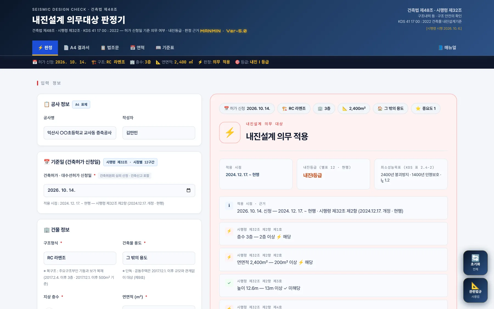
12345678- 1작업 탭 · 매뉴얼
- 2요약 스트립: 허가 신청일 · 구조 · 층수 · 연면적 · 판정 · 등급
- 3공사 정보(A4 표제)
- 4기준일(건축허가 신청일)
- 5건물 정보
- 6판정 결과
- 7적용 시점 · 내진등급 · 최소성능목표
- 8오른쪽 아래 「초기화」 · 「관련법규」
| 영역 | 내용 |
|---|---|
| 왼쪽 — 입력 | 공사 정보 → 기준일 → 건물 정보(구조 · 용도 · 층수 · 연면적 · 중요도 · 높이 · 처마높이 · 기둥 사이 · 특수구조 · 그 밖의 조건 4종) → 「내진설계 의무대상 여부 즉시 판별」 |
| 오른쪽 — 결과 | 입력 요약 → 판정 → 적용 시점 · 내진등급 · 최소성능목표 → 항목별 판정 근거 → 이행 사항 · 주의 → 「A4 판정 결과서」 |
1-2. 작업 탭·근거 표시
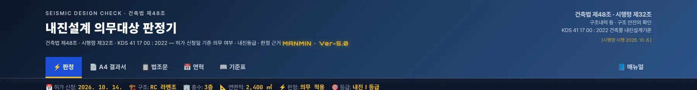
1234567- 1판정
- 2A4 결과서 — 인쇄 · PDF · JPG
- 3법조문
- 4연혁
- 5기준표
- 6매뉴얼(이 문서)
- 7근거: 건축법 제48조 · 시행령 제32조 · KDS 41 17 00 : 2022 [시행령 시행 2026. 10. 6.]
1-3. 설치·보관·매뉴얼
| 항목 | 내용 |
|---|---|
| 설치 | 주소창의 설치 아이콘 또는 휴대전화 「홈 화면에 추가」로 앱처럼 쓸 수 있습니다. 한 번 연 뒤에는 인터넷 없이도 판정됩니다 |
| 결과 보관 | 판정 결과는 A4 결과서(PDF · JPG)로 남기십시오. 화면을 닫으면 입력값은 남지 않습니다 |
| 매뉴얼 | 탭 막대 오른쪽 끝 「📘 매뉴얼」 — 인터넷 연결 시 새 창으로 열립니다. 좁은 화면에서는 탭 막대를 좌우로 밀면 보입니다 |
| 업데이트 | 새 버전이 올라오면 다음 접속 때 자동으로 바뀝니다. 화면이 예전 그대로면 새로 고침(Ctrl+F5) |
021분 따라하기
예제 A로 6단계를 따라 하면 내진설계 의무 적용 · 내진Ⅰ등급 · 중요도계수 1.2가 나옵니다.
- ① 기준일공사명 · 작성자를 넣고 건축허가 신청일 「2026. 10. 14.」을 고릅니다. 아래에 적용 시점 「2024. 12. 17. ~ 현행」과 근거 조문이 나옵니다(3-1).
- ② 구조 · 용도 · 규모구조형식 「RC 라멘조」, 용도 「그 밖의 용도」, 지상 층수 3, 연면적 2,400㎡(3-2).
- ③ 중요도 · 높이중요도 「1」(학교 — 별표 11), 높이 12.6, 처마높이 12.6, 기둥 사이 최대 거리 8.4, 특수구조 「해당 없음」, 그 밖의 조건은 끕니다(3-2 · 4-4).
- ④ 판정 결과「⚡ 내진설계 의무대상 여부 즉시 판별」 → 내진설계 의무 적용 · 내진Ⅰ등급 · 최소성능목표 「2400년 붕괴방지 · 1400년 인명보호」 · 중요도계수 1.2(3-3).
- ⑤ 판정 근거항목별로 해당(⚡) · 미해당(✓)을 확인합니다 — 예제 A는 제1호 층수 · 제2호 연면적 · 제4호 처마높이 · 제6호 중요도 해당(3-4).
- ⑥ A4 결과서「📄 A4 결과서」 탭에서 「🖨️ 인쇄 / PDF 저장」 또는 「🖼️ JPG 저장」(3-10).
| 항목 | 예제 A |
|---|---|
| 적용 시점 | 2024. 12. 17. ~ 현행 — 시행령 제32조 제2항 (2024.12.17. 개정 · 현행) |
| 해당 항목 | 제1호 층수 · 제2호 연면적 · 제4호 처마높이 · 제6호 중요도 |
| 판정 | 내진설계 의무 적용 — 착공신고 때 구조안전 및 내진설계 확인서 제출 |
| 내진등급 · 중요도계수 | 내진Ⅰ등급 · 1.2 (중요도 1 → 별표 12) |
| 최소성능목표 | 2400년 붕괴방지 · 1400년 인명보호 (KDS 41 17 00 표 2.4-2) |
03화면별 기능 상세
3-1. 기준일(허가 신청일)
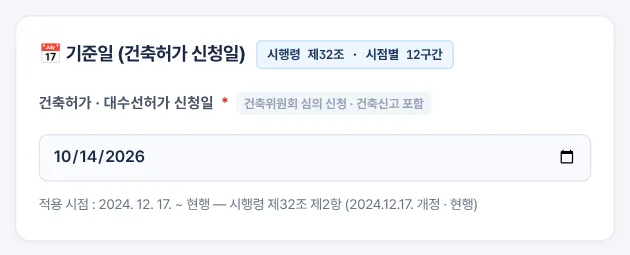
12- 1건축허가 · 대수선허가 신청일
- 2적용 시점 · 근거 조문
| 항목 | 설명 |
|---|---|
| 입력 날짜 | 건축허가 · 대수선허가 신청일. 허가 신청 전 건축위원회 심의를 신청했으면 그 날, 건축신고 대상이면 신고일 |
| 왜 신청일인가 | 시행령 제32조를 고칠 때마다 부칙에 「시행 전에 허가를 신청한 경우에는 종전 규정에 따른다」는 경과조치를 두었습니다(예: 2017. 10. 24. 개정 부칙 제2조) |
| 적용 시점 | 날짜를 고르면 12구간 가운데 해당 구간과 근거 조문이 바로 나옵니다(4-3) |
| 기본값 | 오늘 날짜 — 신축 · 증축을 새로 신청할 때는 그대로 두면 현행 기준입니다 |
3-2. 건물 정보
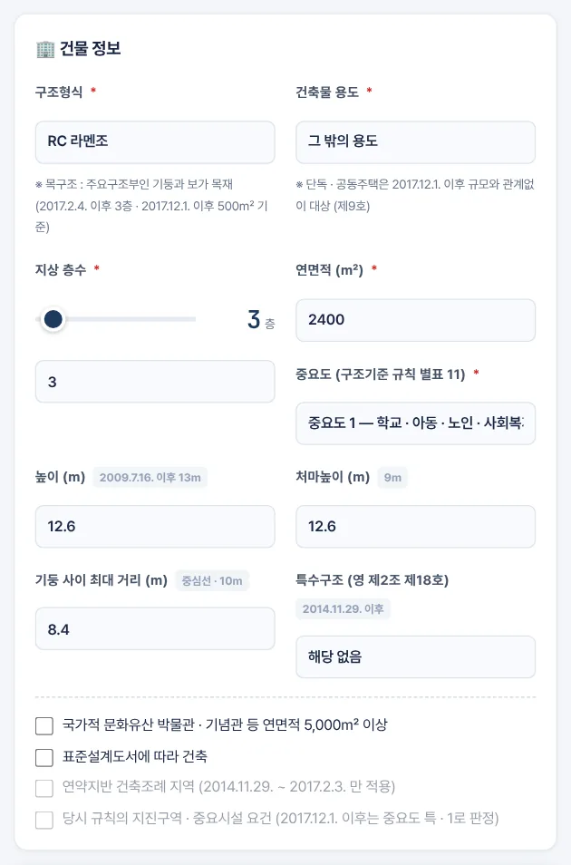
12345678910- 1구조형식
- 2건축물 용도
- 3지상 층수
- 4연면적
- 5중요도(별표 11)
- 6높이
- 7처마높이
- 8기둥 사이 최대 거리
- 9특수구조
- 10그 밖의 조건 4종
| 항목 | 설명 |
|---|---|
| 구조형식 | 「목구조」는 주요구조부인 기둥과 보가 목재인 건축물 — 2017. 2. 4. 이후 3층 · 2017. 12. 1. 이후 500㎡ 기준. 조적 · PC는 참고 안내가 붙습니다 |
| 건축물 용도 | 단독주택 · 공동주택(2017. 12. 1. 이후 제9호) · 창고 · 축사 · 작물 재배사(연면적 기준 제외) · 공장(1988 구간 대형 기준 제외) · 그 밖의 용도 |
| 중요도 | 별표 11 중요도 특 · 1 · 2 · 3 — 2017. 12. 1. 이후 특 · 1이면 제6호 해당, 내진등급도 이 값으로 정합니다 |
| 높이 · 처마 · 기둥 사이 | 2009. 7. 16. 이후 13 m · 9 m · 10 m. 기둥 사이는 기둥 중심선 사이(기둥이 없으면 내력벽 중심선 사이) 최대 거리 |
| 특수구조 | 영 제2조 제18호 가목(보 · 차양 3 m 이상 돌출) · 다목(무량판, 2024. 12. 17.~) · 라목(국토교통부 고시 특수구조) |
| 그 밖의 조건 | 문화유산 박물관 등 5,000㎡ · 표준설계도서 · 연약지반 조례 지역(2014. 11. 29. ~ 2017. 2. 3.) · 당시 규칙의 지진구역 · 중요시설 요건(2017. 11. 30. 이전) — 해당 시점이 아니면 흐리게 표시됩니다 |
3-3. 판정·내진등급
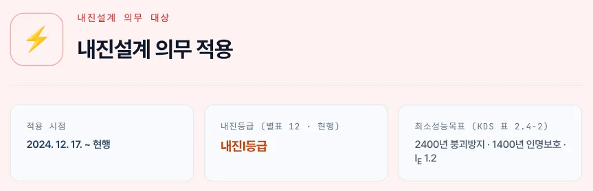
1234- 1판정
- 2적용 시점
- 3내진등급(별표 12 · 현행)
- 4최소성능목표 · 중요도계수
| 항목 | 설명 |
|---|---|
| 판정 | 적용 시점의 각 호 가운데 하나라도 해당하면 「내진설계 의무 적용」. 2018. 12. 4. 이후 표준설계도서 건축물은 제외 |
| 내진등급 | 중요도 특 → 내진특등급 · 1 → 내진Ⅰ등급 · 2 · 3 → 내진Ⅱ등급(별표 12 — 2014. 2. 7. 신설된 현행 체계). 의무 대상이 아니면 「해당 없음」 |
| 최소성능목표 | KDS 41 17 00 표 2.4-2 — 재현주기별 성능수준 2개를 함께 표시(4-5) |
3-4. 판정 근거
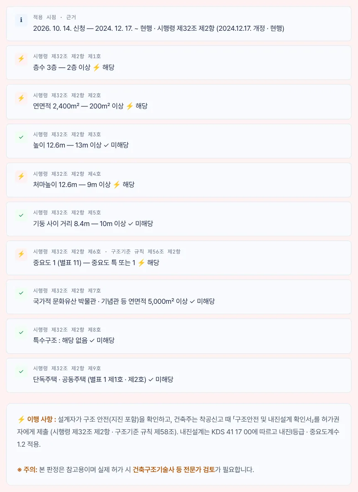
12345- 1적용 시점 · 근거
- 2제1호 층수
- 3제2호 연면적
- 4제6호 중요도
- 5이행 사항 · 주의
신청일의 구간에 맞는 조문 번호로 각 호를 한 줄씩 보여 줍니다. ⚡는 해당, ✓는 미해당입니다. 의무 대상이면 이행 사항(설계자 구조 안전 확인 → 착공신고 때 「구조안전 및 내진설계 확인서」 제출, 구조기준 규칙 제58조)을, 아니면 증축 · 대수선 · 용도변경 때 다시 판정하라는 안내를 붙입니다.
3-5. 사례 — 1층 목조 단독주택
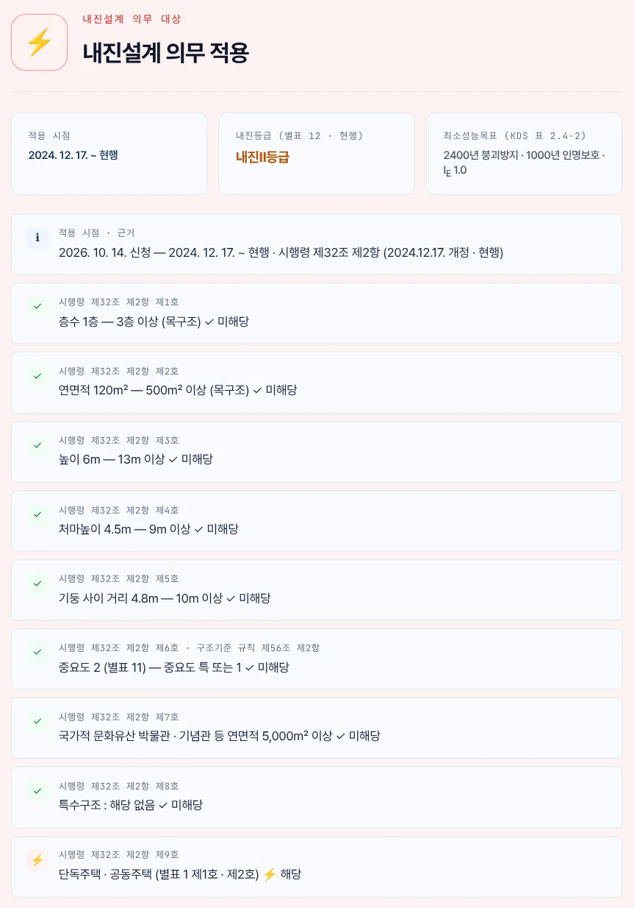
1234- 1내진설계 의무 적용
- 2내진Ⅱ등급
- 3층수 1층 — 목구조 3층 기준 미해당
- 4제9호 단독주택 — 해당
층수 · 연면적 · 높이는 모두 기준 미만이지만 2017. 12. 1.부터 단독주택 · 공동주택은 규모와 관계없이 제9호 대상입니다. 「작은 집이라 내진설계가 필요 없다」는 오해를 바로잡는 사례입니다.
3-6. 사례 — 1995년 허가 건물
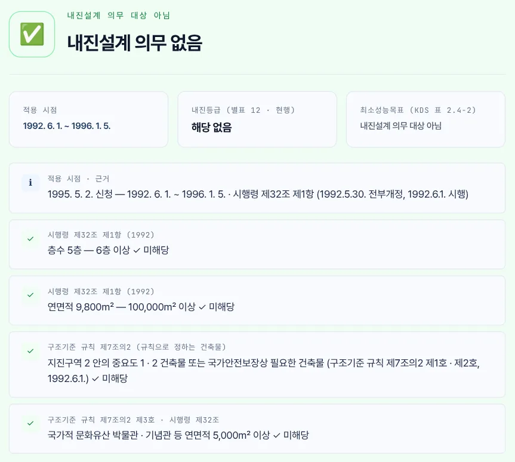
1234- 1내진설계 의무 없음
- 21992. 6. 1. ~ 1996. 1. 5.
- 36층 이상 — 미해당
- 410만㎡ 이상 — 미해당
1995년에는 6층 이상 또는 연면적 10만㎡ 이상(1992. 6. 1. 전부개정 시행령)만 대상이었습니다. 같은 건물을 2005. 7. 18. 이후에 신청했다면 3층 · 1,000㎡ 기준으로 의무 대상입니다. 기존 건축물의 내진설계 여부를 확인할 때는 당시 허가 신청일로 판정하십시오.
3-7. 법조문 탭
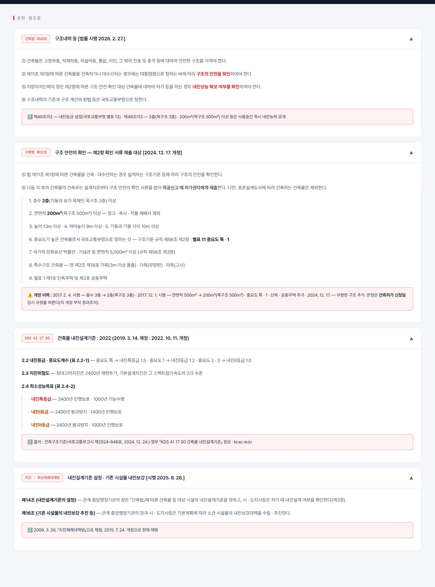
1234- 1건축법 제48조
- 2시행령 제32조 제2항
- 3KDS 41 17 00 : 2022
- 4지진 · 화산재해대책법
3-8. 연혁·기준표 탭
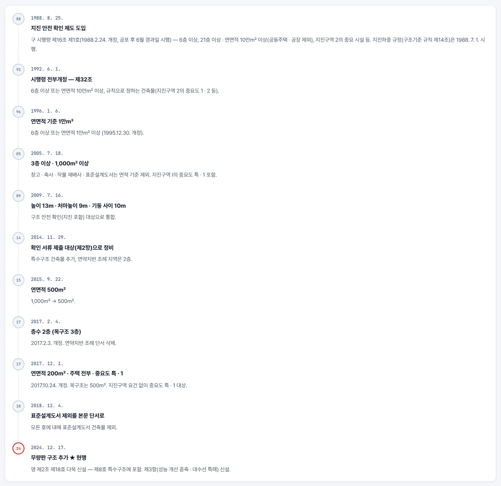
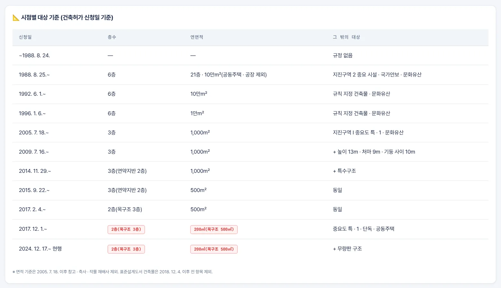
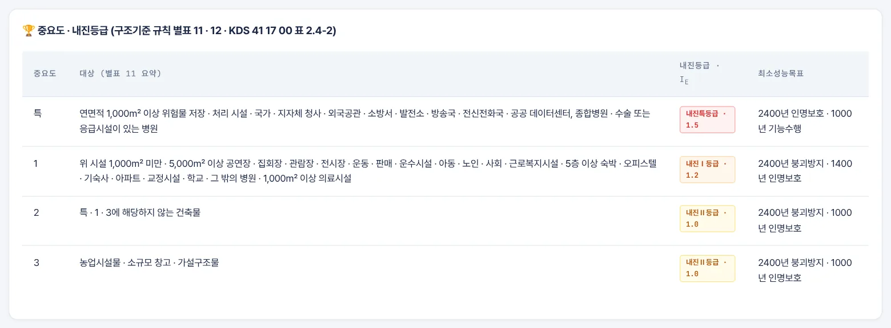
연혁 탭은 시행일 순으로 무엇이 바뀌었는지 보여 줍니다. 기준표 탭의 첫 표는 판정 엔진과 같은 12구간, 둘째 표는 별표 11 요약과 별표 12 · KDS 표 2.4-2를 한 줄로 묶은 것입니다. 「구조형식별 내진 특성」 표는 MANMIN 참고값입니다.
3-9. 관련법규 창
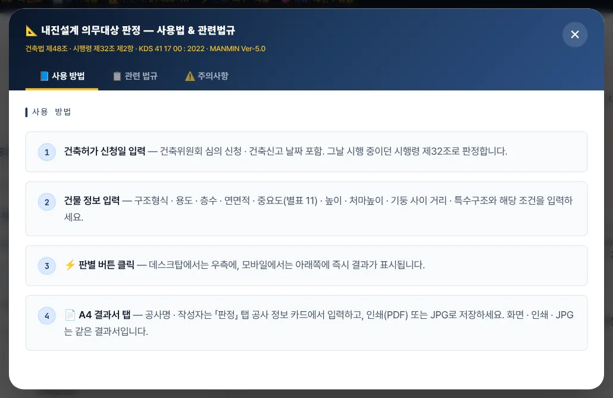
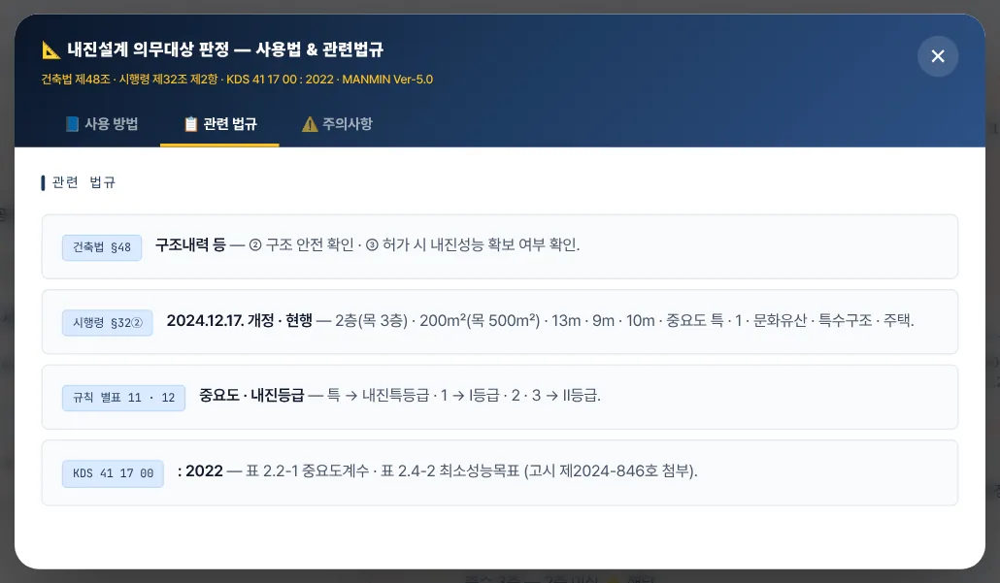
3-10. A4 결과서·출력
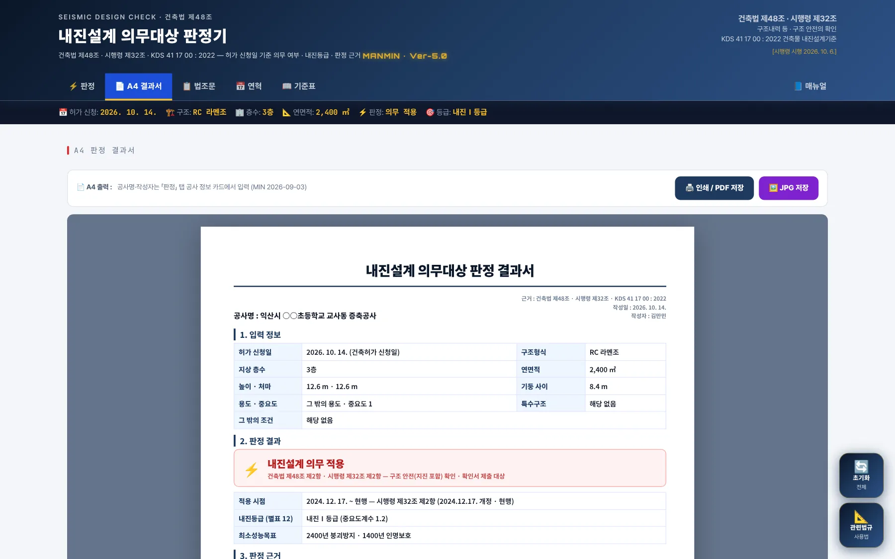
123- 1인쇄 / PDF 저장
- 2JPG 저장
- 3A4 판정 결과서
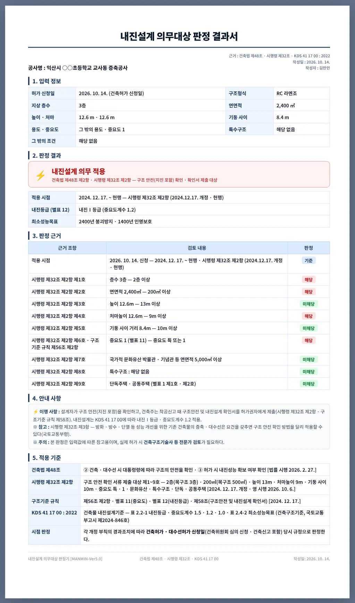
12345- 11. 입력 정보
- 22. 판정 결과
- 33. 판정 근거
- 44. 안내 사항
- 55. 적용 기준
결과서는 입력 정보 · 판정 결과 · 판정 근거 · 안내 사항 · 적용 기준 5개 절이며, 판정 근거는 화면과 같은 조문 번호로 표에 담깁니다. 공사명 · 작성자는 「판정」 탭 공사 정보 카드에서 넣습니다.
3-11. 휴대전화 화면
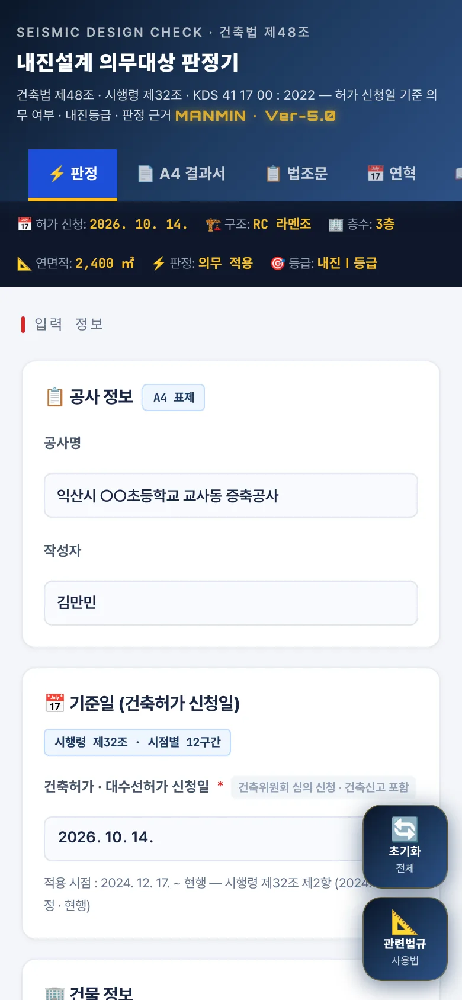
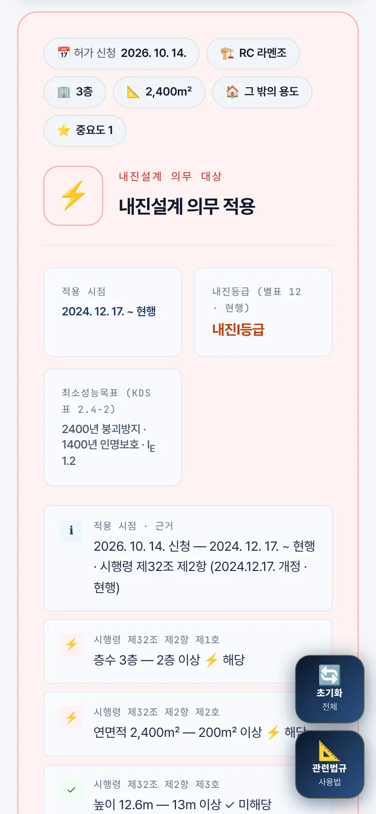
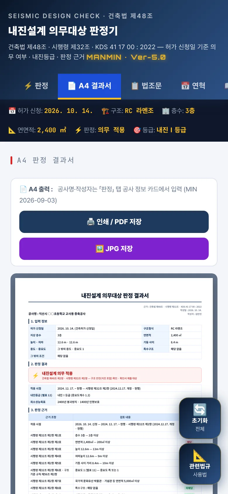
좁은 화면에서는 입력 → 결과가 한 줄로 쌓입니다. 탭 막대는 한 줄이며, 「매뉴얼」은 탭 막대를 좌우로 밀면 보입니다.
04법령 해설
4-1. 근거 체계
| 근거 | 내용 |
|---|---|
| 법 제48조 | ① 지진 등에 안전한 구조 · ② 건축 · 대수선 시 대통령령에 따라 구조 안전 확인 · ③ 허가 시 내진성능 확보 여부 확인 · ④ 구조기준은 국토교통부령 |
| 법 제48조의2 · 3 | 내진등급 설정(국토교통부령) · 2층(목구조 3층) · 200㎡(목구조 500㎡) 이상 등 사용승인 즉시 내진능력 공개 |
| 시행령 제32조 | ① 설계자의 구조 안전 확인 · ② 확인 서류 제출 대상 제1~9호 · ③ 성능 개선 증축 · 대수선 특례 · ④ 기존 건축물 완화 시 제출 |
| 구조기준 규칙 | 제56조(②제6호 = 중요도 특 · 1, ③제7호 = 박물관 등 5,000㎡) · 제58조(확인서 서식) · 제60조 · 별표 11 · 12 |
| KDS 41 17 00 | 건축물 내진설계기준 : 2022 — 건축구조기준(국토교통부고시 제2024-846호, 2024. 12. 24.) 첨부 |
건축법 제48조(2026. 2. 27. 시행) · 건축법 시행령 제32조 제2항(2026. 10. 6. 시행본 · 제32조 최종 개정 2024. 12. 17.) · 건축물의 구조기준 등에 관한 규칙 제56조 · 별표 11 · 12(2024. 12. 17.) · KDS 41 17 00 : 2022 — LawMCP 원문 대조 2026-10-14
4-2. 현행 대상 (제32조 제2항)
| 호 | 대상 |
|---|---|
| 제1호 | 층수 2층(기둥과 보가 목재인 목구조 3층) 이상 |
| 제2호 | 연면적 200㎡(목구조 500㎡) 이상 — 창고 · 축사 · 작물 재배사 제외 |
| 제3 · 4 · 5호 | 높이 13 m · 처마높이 9 m · 기둥과 기둥 사이 10 m 이상 |
| 제6호 | 중요도가 높은 건축물 — 별표 11 중요도 특 · 1(규칙 제56조 제2항) |
| 제7호 | 국가적 문화유산 박물관 · 기념관 등 연면적 5,000㎡ 이상(규칙 제56조 제3항) |
| 제8호 | 특수구조 건축물 — 영 제2조 제18호 가목 · 다목 · 라목 |
| 제9호 | 별표 1 제1호 단독주택 · 제2호 공동주택 |
| 단서 | 표준설계도서에 따라 건축하는 건축물 제외 |
건축법 2026. 11. 12. 시행예정본과 시행령 2027. 4. 7. 시행예정본에서도 제48조 · 제32조는 바뀌지 않습니다(LawMCP 확인).
4-3. 시점별 기준
| 신청일 | 층수 | 연면적 | 그 밖 |
|---|---|---|---|
| ~1988. 8. 24. | — | — | 규정 없음 |
| 1988. 8. 25.~ | 6층 | 21층 · 10만㎡(공동주택 · 공장 제외) | 지진구역 2 중요 시설 · 국가안보 · 박물관 5,000㎡ — 구 시행령 제16조 제1호(1988. 2. 24. 개정) |
| 1992. 6. 1.~ | 6층 | 10만㎡ | 규칙 제7조의2 지정 건축물 · 박물관 5,000㎡ |
| 1996. 1. 6.~ | 6층 | 1만㎡ | 1995. 12. 30. 개정 |
| 2005. 7. 18.~ | 3층 | 1,000㎡ * | 지진구역 Ⅰ 중요도 특 · 1 · 문화유산 |
| 2009. 7. 16.~ | 3층 | 1,000㎡ * | + 높이 13 m · 처마 9 m · 기둥 사이 10 m |
| 2014. 11. 29.~ | 3층(연약지반 2층) | 1,000㎡ * | + 특수구조 |
| 2015. 9. 22.~ | 3층(연약지반 2층) | 500㎡ * | |
| 2017. 2. 4.~ | 2층(목구조 3층) | 500㎡ * | |
| 2017. 12. 1.~ | 2층(목구조 3층) | 200㎡(목구조 500㎡) * | 중요도 특 · 1 · 단독 · 공동주택 |
| 2018. 12. 4.~ | 〃 | 〃 | 표준설계도서 제외를 본문 단서로 |
| 2024. 12. 17.~ | 〃 | 〃 | + 무량판 구조(현행) |
* 창고 · 축사 · 작물 재배사는 연면적 기준 제외(2005. 7. 18.~), 표준설계도서 건축물도 연면적 기준 제외(2005. 7. 18. ~ 2018. 12. 3.). 1988. 8. 25.은 1988. 2. 24. 개정 시행령 부칙 ① 단서 「공포 후 6월이 경과한 날」을 초일 불산입으로 계산한 날입니다. 지진하중 규정(구조기준 규칙 제14조)은 1988. 7. 1. 시행입니다.
4-4. 중요도·내진등급
| 중요도 | 대상(별표 11 요약, 2024. 12. 17. 개정) | 등급 · 계수(별표 12) |
|---|---|---|
| 특 | 1,000㎡ 이상 위험물 저장 · 처리 시설 · 국가 · 지자체 청사 · 외국공관 · 소방서 · 발전소 · 방송국 · 전신전화국 · 공공 데이터센터, 종합병원 · 수술 또는 응급시설이 있는 병원 | 내진특등급 · 1.5 |
| 1 | 위 시설 1,000㎡ 미만, 5,000㎡ 이상 공연장 · 집회장 · 관람장 · 전시장 · 운동 · 판매 · 운수시설(화물터미널 · 집배송시설 제외), 아동 · 노인 · 사회 · 근로복지시설, 5층 이상 숙박 · 오피스텔 · 기숙사 · 아파트 · 교정시설, 학교, 그 밖의 병원 · 1,000㎡ 이상 의료시설 | 내진Ⅰ등급 · 1.2 |
| 2 | 특 · 1 · 3에 해당하지 않는 건축물 | 내진Ⅱ등급 · 1.0 |
| 3 | 농업시설물 · 소규모창고 · 가설구조물 | 내진Ⅱ등급 · 1.0 |
두 용도 이상이 섞이면 가장 높은 중요도를 적용합니다(KDS 41 17 00 2.2(2)). 앱은 중요도를 직접 고르게 하므로 별표 11 원문과 비고(데이터센터)를 확인해 선택하십시오.
4-5. 최소성능목표 (KDS)
| 내진등급 | 성능목표 1 | 성능목표 2 |
|---|---|---|
| 내진특등급 | 2400년 · 인명보호 | 1000년 · 기능수행 |
| 내진Ⅰ등급 | 2400년 · 붕괴방지 | 1400년 · 인명보호 |
| 내진Ⅱ등급 | 2400년 · 붕괴방지 | 1000년 · 인명보호 |
4-6. 2017. 12. 1. 이전 지진구역 요건
| 신청일 | 「규칙으로 정하는 지진구역 안의 건축물」 |
|---|---|
| 1988. 8. 25.~ | 지진구역 2 안의 종합병원 · 병원 · 발전소 · 공공업무시설 · 방송국 · 전신전화국 1,000㎡ 이상, 관람집회시설 5,000㎡ 이상, 판매시설 1만㎡ 이상, 국가안보상 지정 건축물 |
| 1992. 6. 1.~ | 지진구역 2 안의 중요도 1 · 2 건축물, 국가안전보장상 필요한 건축물(규칙 제7조의2) |
| 2005. 7. 18. ~ 2017. 11. 30. | 지진구역 Ⅰ 안의 중요도 특 · 1 건축물(규칙 제7조 · 제56조 제2항) |
이 시기에는 중요 용도라도 지진구역 요건이 함께 있어야 대상이었습니다. 당시 규칙의 지진구역 표 · 중요도 표는 시점마다 달라 앱이 자동 판정하지 않고 체크 항목으로 두었습니다. 해당 여부는 당시 규칙 원문으로 확인하십시오.
4-7. 판정 범위·한계
| 항목 | 내용 |
|---|---|
| 판정하는 것 | 신청일 당시 시행령 제32조(1988 구간은 구 제16조) 각 호, 창고 등 · 표준설계도서 제외, 내진등급 · 중요도계수 · 최소성능목표 |
| 판정하지 않는 것 | 별표 11 중요도 자동 분류, 과거 규칙의 지진구역 · 중요도 표, 제32조 제3항 성능 개선 특례 · 과거 「사용승인 5년 경과 증축」 단서, 법 제48조의3 내진능력 공개 대상, 실제 구조 해석 |
| 참고값 | 구조형식별 특성 · 조적 · PC 안내(MANMIN 참고) |
4-8. v5.0.7 판정·근거 정정 (2026-10-14)
| 항목 | 기존 | 정정 |
|---|---|---|
| 기준일 | 준공연도(정수) | 건축허가 · 대수선허가 신청일(부칙 경과조치) |
| 시점 구간 | 4구간(1988 · 2005 · 2017) | 12구간(LawMCP 시행본 원문) |
| 2017년 | 연중 2층 · 200㎡ | 2. 4. 2층 · 500㎡ → 12. 1. 200㎡ |
| 1996 ~ 2005 | 6층 · 100,000㎡ | 1996. 1. 6.부터 1만㎡ |
| 목구조 | 층수 2층 | 2017. 2. 4. 이후 3층 |
| 판정 항목 | 층수 · 연면적 · 용도 | 제1~9호 전부 + 창고 등 · 표준설계도서 제외 |
| 제6호 | 4개 용도 「규모 무관」 | 별표 11 중요도 특 · 1(2017. 12. 1.~) · 이전은 지진구역 요건 |
| 내진등급 | 16층 · 30,000㎡ 이상 Ⅰ등급 | 별표 12(중요도로 결정) |
| 성능목표 | 재현주기 2,400 · 1,000 · 500년 | KDS 41 17 00 표 2.4-2 |
| 제48조 표기 | ② 「내진설계를 하여야」 · ③ 「지진구역 고려」 | ② 구조 안전 확인 · ③ 내진성능 확보 여부 확인 |
| KDS 연혁 | 2018. 12. 31. 제정 | 2019. 3. 14. 제정 · 2022. 10. 11. 개정 |
| 시행일 표기 | 시행령 시행 2026. 7. 28. | 2026. 10. 6. |
예전 판으로 만든 결과서는 다시 판정하십시오. 특히 1996 ~ 2005년 · 2015 ~ 2017년 허가분, 1층 단독 · 공동주택, 목구조 2층 건축물은 결과가 달라질 수 있습니다. 전 조합 18,923,520건을 독립 구현으로 대조해 불일치 0건을 확인했습니다.
05실무 작업 방법
5-1. 단계별 절차
| 단계 | 내용 |
|---|---|
| ① 신청일 | 신축 · 증축은 허가(신고) 신청 예정일, 기존 건축물은 건축물대장 · 허가 서류의 당초 허가 신청일을 확인합니다 |
| ② 중요도 | 별표 11로 중요도를 정합니다 — 여러 용도면 가장 높은 중요도 |
| ③ 입력 · 판정 | 층수(지하층 제외) · 연면적 · 높이 · 처마높이 · 기둥 사이 · 특수구조를 넣어 판정합니다 |
| ④ 설계 · 확인서 | 의무 대상이면 KDS 41 17 00에 따라 내진설계하고, 착공신고 때 구조안전 및 내진설계 확인서(규칙 제58조)를 제출합니다 |
| ⑤ 출력 | A4 결과서를 PDF로 남겨 검토서 · 협의 자료에 붙입니다 |
5-2. 허가·착공 전 확인
| 항목 | 확인 |
|---|---|
| 확인서 서식 | 6층 이상 별지 제1호 · 소규모건축물 별지 제2 · 3호 · 그 밖 별지 제2호(규칙 제58조) |
| 건축구조기술사 협력 | 특수구조 · 고층 · 다중이용 건축물 등은 시행령 제91조의3 협력 대상 여부를 따로 확인 |
| 내진능력 공개 | 법 제48조의3 대상이면 사용승인 즉시 내진능력 공개 |
| 증축 · 대수선 | 증축 · 대수선 · 용도변경은 그 신청일 기준으로 다시 판정. 성능 개선 공사는 제32조 제3항 특례 검토 |
06문제 해결·FAQ
| 증상 | 해결 |
|---|---|
| 결과가 나오지 않아요 | 허가 신청일 · 구조형식 · 건축물 용도를 모두 골라야 합니다 |
| 1층 주택인데 의무가 나와요 | 2017. 12. 1.부터 단독 · 공동주택은 규모와 관계없이 제9호 대상입니다(3-5) |
| 예전 건물은 어떻게 보나요 | 당시 허가 신청일을 넣으십시오. 판정은 그날 시행 중이던 조문으로 합니다(3-6) |
| 지진구역 체크가 흐려요 | 2017. 12. 1. 이후 신청일이면 지진구역 요건이 없어 쓰지 않습니다. 이전 날짜에서만 켜집니다 |
| 중요도를 모르겠어요 | 기준표 탭 둘째 표 또는 4-4의 별표 11 요약을 보십시오. 학교는 중요도 1입니다 |
| 등급이 「해당 없음」이에요 | 의무 대상이 아니면 등급을 표시하지 않습니다 |
| 예전 판과 결과가 달라요 | v5.0.7에서 판정을 원문 기준으로 정정했습니다(4-8) |
| 화면이 예전 판이에요 | 새로 고침(Ctrl+F5) 또는 앱을 닫았다 다시 여십시오 |
부록
A1. 예제 입력값
| 예제 | 입력 |
|---|---|
| 예제 A | 2026. 10. 14. 신청 · RC 라멘조 · 그 밖의 용도(학교) · 3층 · 2,400㎡ · 중요도 1 · 높이 12.6 m · 처마 12.6 m · 기둥 사이 8.4 m · 특수구조 없음 |
| 예제 B | 2026. 10. 14. 신청 · 목구조 · 단독주택 · 1층 · 120㎡ · 중요도 2 · 높이 6.0 m · 처마 4.5 m · 기둥 사이 4.8 m |
| 예제 C | 1995. 5. 2. 신청 · RC 라멘조 · 그 밖의 용도(사무소) · 5층 · 9,800㎡ · 중요도 2 · 높이 18 m · 처마 18 m · 기둥 사이 8.4 m |
A2. 예제 결과
| 예제 | 적용 시점 | 해당 항목 | 판정 | 등급 · 계수 |
|---|---|---|---|---|
| 예제 A | 2024. 12. 17. ~ 현행 | 제1호 층수 · 제2호 연면적 · 제4호 처마높이 · 제6호 중요도 | 의무 적용 | 내진Ⅰ등급 · 1.2 |
| 예제 B | 2024. 12. 17. ~ 현행 | 제9호 주택 | 의무 적용 | 내진Ⅱ등급 · 1.0 |
| 예제 C | 1992. 6. 1. ~ 1996. 1. 5. | 해당 없음 | 의무 없음 | 해당 없음 |
A3. 버전 변경 내역
| 버전 | 내용 |
|---|---|
| Ver-5.0 · v5.0.8 (2026-10-14) | 탭 막대 「📘 매뉴얼」 버튼 · 사용자 매뉴얼 연결 |
| Ver-5.0 · v5.0.7 (2026-10-14) | 판정 원문 정정 — 허가 신청일 기준 12구간 · 제32조 제2항 제1~9호 · 별표 11 · 12 · KDS 표 2.4-2 · 근거 표기 정정(4-8) |
| Ver-5.0 · v5.0.6 (2026-09) | 디자인 통일(헤더 · 탭 막대 · 요약 스트립), A4 결과서 · JPG 저장 |
A4. 용어
| 용어 | 뜻 |
|---|---|
| 구조 안전의 확인 | 설계자가 구조기준에 따라 구조(지진 포함)의 안전을 확인하는 것(시행령 제32조 제1항) |
| 확인 서류 제출 대상 | 제32조 제2항 각 호 — 착공신고 때 구조안전 및 내진설계 확인서를 제출하는 건축물 |
| 중요도 | 용도 · 규모에 따른 건축물 분류 특 · 1 · 2 · 3(별표 11) |
| 내진등급 | 중요도로 정하는 특 · Ⅰ · Ⅱ 등급(별표 12, 법 제48조의2) |
| 중요도계수 IE | 설계지진을 키우는 계수 1.5 · 1.2 · 1.0(KDS 41 17 00 표 2.2-1) |
| 최대고려지진 | 2400년 재현주기 지진(KDS 41 17 00 2.3) |
| 목구조 건축물 | 주요구조부인 기둥과 보가 목재인 건축물(제32조 제2항 제1호) |